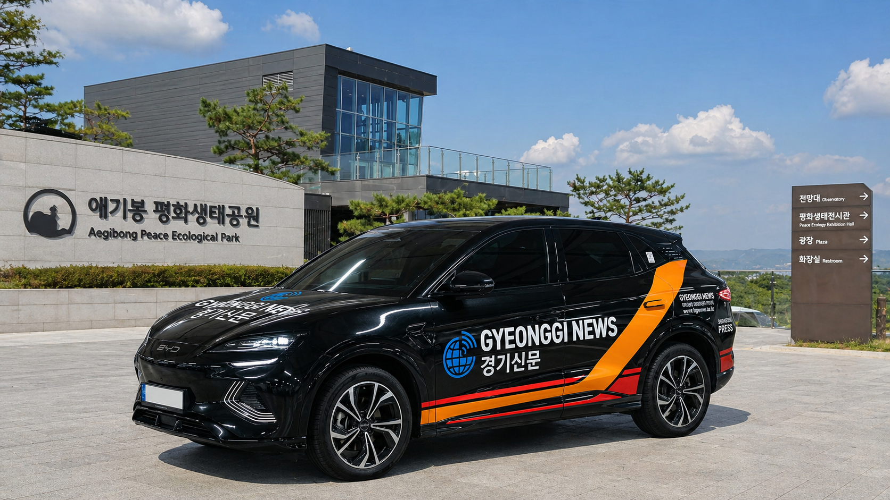
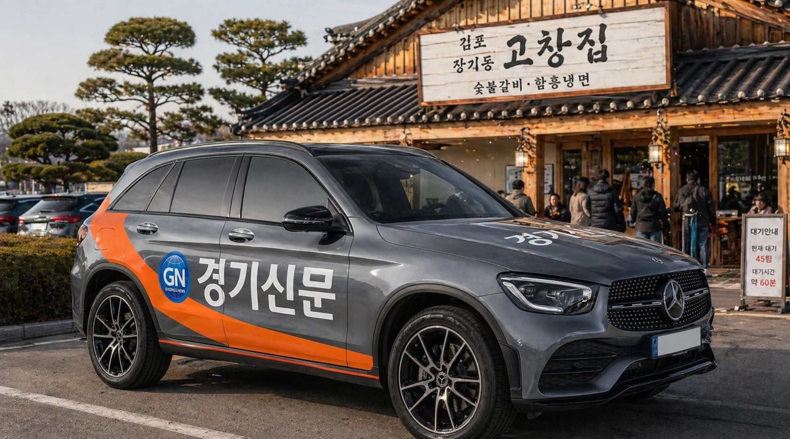
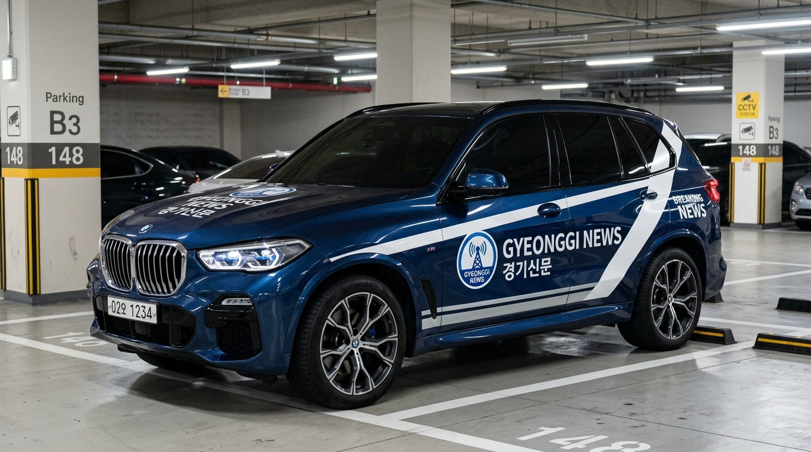
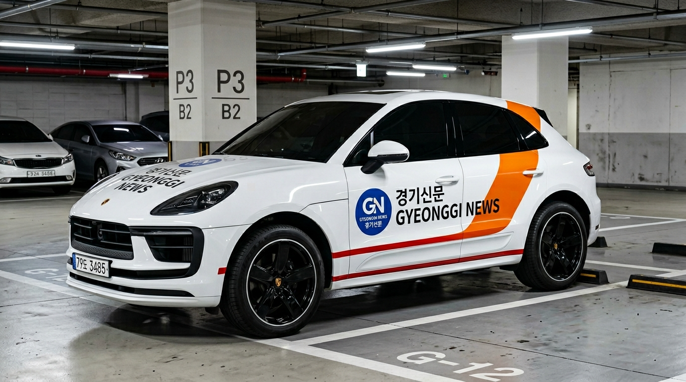
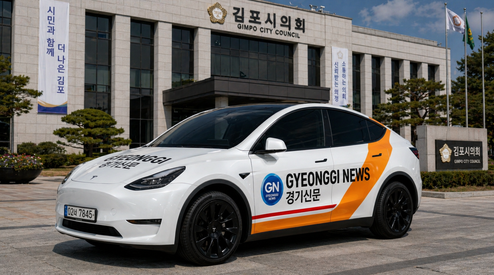

귀사의 모빌리티 혁신, 경기도 전역을 누비는 가장 강력한 메시지가 됩니다.
경기신문은 경기도 전역의 생생한 현장을 발로 뛰며 취재합니다.
귀사의 우수한 차량을 공식 취재 차량으로 지원해 주신다면, 다음과 같은 파격적인 홍보 파트너십을 약속드립니다.
전용 프레스 랩핑이 적용된 차량이 매일 경기도 주요 도심과 관공서, 행사장을 순회하며 강력한 시각적 노출 효과를 창출합니다.
차량 지원 브랜드에 한해 매월 1회 해당 기업의 브랜드 스토리, 신차 리뷰, ESG 경영 등 심층 기획 기사를 작성하여 보도합니다.
정론직필을 추구하는 언론사의 공식 취재 차량으로 활약함으로써, 공익적 이미지와 브랜드 신뢰도를 동시에 높일 수 있습니다.

혁신적인 전기차 기술력을 경기도 전역에 알립니다.

프리미엄의 품격, 현장을 뛰는 언론의 신뢰와 만납니다.

다이내믹한 드라이빙으로 가장 빠르게 소식을 전합니다.

압도적인 퍼포먼스로 현장의 생동감을 담아냅니다.

미래 지향적인 스마트 모빌리티와 디지털 혁신 언론의 결합.